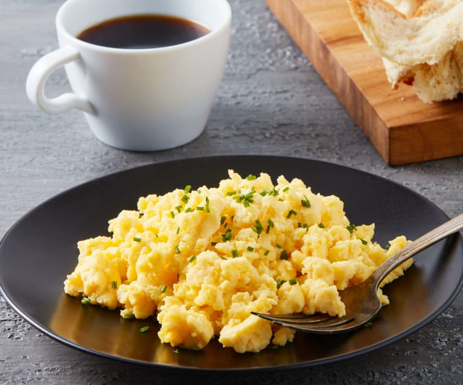

Scrambled Eggs

Description
Eggs are a savoury, soft and high in protein meal, that are a staple in many peoples breakfasts
Ingridients
- Eggs
- Red pepper flakes
- Cherry tomatoes
- Feta chesse
- Fresh Basil
- Olive Oil
- Salt
Steps
- Beat eggs and red pepper flakes together in a bowl. Stir tomatoes, feta, and basil leaves into egg mixture.
- Heat olive oil in a nonstick skillet over high heat until oil starts to shimmer. Pour egg mixture into hot oil and cook, without stirring, for 5 seconds.
- Cook and stir egg mixture until eggs are scrambled and softly set, about 30 seconds. Transfer eggs to a plate and sprinkle with sea salt.